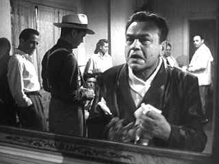

| Key Largo/ A-, A- |
| Warner/1948/101/FS 1.33/BW |
A hurricane warning mirrors the emotions about
to erupt inside an off-season summer Key Largo hotel. An unusual
quintet of "sport fisherman" have taken up residence at the
Largo Hotel. A bus pulls up to the hotel and a stranger walks into the
hotel. It's a classic set-up.
 |
| Do you like what you see Rocco? ©Warner |
The fisherman are a gang of hoods led by
Johnny Rocco, a gangland kingpin on the run. They've arrived to rendezvous
for a money pick-up and then high-tail it to the safety of
Cuba. The stranger is Frank McCloud. He's there to pay his respects to the
hotel owner, old man James Temple, and to Nora Temple, the widow of
Frank's army buddy. McCloud reluctantly gets swept up in the frothing
tension . Sexual sparks ricochet around the tight quarters of the hotel
room like an out-of-control gunfight.
Though the claustrophobic hotel setting could
easily seem stage-bound, the characters move with unusual energy in every
scene. Rocco, a pacing tiger waiting for his food, takes possession of the
hotel with sadistic ferocity. McCloud bides his time with gritted teeth.
Nora challenges Rocco with fire in her eyes. The winds blow tauntingly.
More than anything, the thespian fireworks light
up this claustrophobic drama. One performance seems better than the next.
Humphrey Bogart walks into the hotel and all eyes immediately gravitate to
him. Edward G. Robinson arrives and you can't take your eyes off him
except that Bogart's in the room. Claire Trevor tremors through an
incredible performance as the abused Rocco girlfriend Gaye Dawn , a once
beautiful singer gone sour on the booze. Bacall is tough right in Rocco's
face. Lionel Barrymore is an old stick of dynamite with a short fuse but
lacking nitro.
Presiding over the tightly scripted dramatics is
director John Huston. Huston never lets up on the tension. All the rhythms
are perfectly tuned.
Warner has found gorgeous elements for the DVD
transfer of Key Largo. Sharp from the opening moments to the last
seconds and blessedly free of dirt and scratches, Key Largo looks like it
could have been released to theaters last year. The contrast range is
excellent and shadow detail captures the lighting well. Blacks have proper
luster. The mono sound is free of hiss and dialogue articulated withy
great clarity. |
|
|
|

The Movie Poster Archive
includes extensive poster images from the films of stars like Susan
Hayward, Kirk Douglas, Katharine Hepburn and many more. Our featured
star is Edward G. Robinson

Odd Man Out/B+,B

This straight-forward IRA tale takes on dream-like qualities under the
polished direction of Carol Reed. Stunning images and an amazing James
Mason performance.


Mystery writer Fred Hunter digs into classic films on DVD. Check out his
insightful reviews at The Classics on DVD.

News, information, features about current films in theaters and in the
pipeline. Easy to use interface.

The DVD
Answer Man is a new site devoted to spreading the DVD gospel.
Answers to questions, reviews, links and more....
|